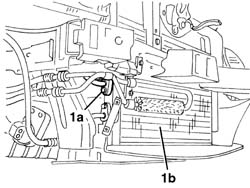
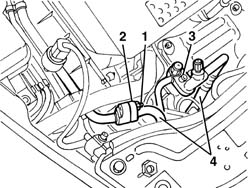
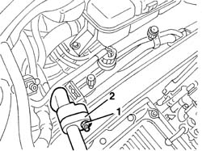
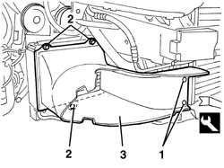
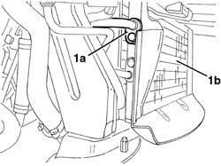
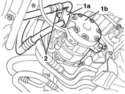

5040A50 PIPE FROM COMPRESSOR TO AIR CONDITIONER CONDENSER - R+R
- Path
- Procedures > 50 AUXILIARY UNITS > 5040 AIR CONDITIONING CASING AND COMPONENTS > 5040A CHECKING OPERATION OF AIR CONDITIONER (TEMPERATURE) > 5040A50 PIPE FROM COMPRESSOR TO AIR CONDITIONER CONDENSER - R+R
- Kind
- repair procedure (removal / refitting; the operation number is the code)
- Applies to
- engines: 2.0 JTS, 3.2 V6; all production periods
- Interactive page
- https://sloeber94.github.io/elrnDB-aGt/en/#/125001527
Applies to: engines: 2.0 JTS; all production periods
 Removing
Removing
 Refitting
RefittingObserve the following precaution.
Drain the refrigerant (
Op. 0010T84 COOLANT FOR AIR CONDITIONING SYSTEM DEHYDRATE AND RECHARGE
).
Op. 4450B02 LEFT FRONT WHEEL R R
Op. 4450B04 RIGHT FRONT WHEEL R R
Op. 7055B54 UNDER-ENGINE GUARD - R R
Op. 7055B64 LH OR RH REFLECTOR(ONE) ON REAR BUMPERS - R R
Op. 7055B65 ENGINGE BAY DUSTGUARD PROTECTION IN LEFT FRONT WHEEL ARCH R R
Op. 7055B90 LEFT FRONT WHEEL ARCH LINER - R.R.
Op. 7055B91 RIGHT FRONT WHEEL ARCH LINER - R.R.
1. Undo the bolt and disconnect the connector (1a) for the pipe from the condenser (1b).

Applies to: engines: 2.0 JTS; all production periods
1. Lower the vehicle, then undo the nut fixing the intermediate coupling for the pipe from the climate control casing to the compressor.
2. Disconnect the intermediate coupling.
3. Undo the bolt and disconnect the connector for the pipe from the compressor.
4. Remove the pipe.

Applies to: engines: 2.0 JTS; all production periods
Refitting
RemovingCheck that the pipe is not damaged or cracked.
Position the pipe.
Connect the connectors for the pipe and tighten the bolts and the nut.
 | Fastening | Component | Ø | Value (daNm) |
|---|---|---|---|---|
- | Bolt | COOLANT SYSTEM FITTINGS | M6 | 0.9 |
| Fastening | Component | Ø | Value (daNm) |
|---|---|---|---|---|
- | Nut | COOLANT SYSTEM FITTINGS | M6 | 0.9 |
Op. 7055B90 LEFT FRONT WHEEL ARCH LINER - R.R.
Op. 7055B91 RIGHT FRONT WHEEL ARCH LINER - R.R.
Op. 7055B65 ENGINGE BAY DUSTGUARD PROTECTION IN LEFT FRONT WHEEL ARCH R R
Op. 7055B64 LH OR RH REFLECTOR(ONE) ON REAR BUMPERS - R R
Op. 7055B54 UNDER-ENGINE GUARD - R R
Op. 4450B02 LEFT FRONT WHEEL R R
Op. 4450B04 RIGHT FRONT WHEEL R R
Repressurize using refrigerant (
Op. 0010T84 COOLANT FOR AIR CONDITIONING SYSTEM DEHYDRATE AND RECHARGE
).
Applies to: engines: 3.2 V6; all production periods
Removing
RefittingObserve the following precaution.
Drain the refrigerant (
Op. 0010T84 COOLANT FOR AIR CONDITIONING SYSTEM DEHYDRATE AND RECHARGE
).
Op. 7055B54 UNDER-ENGINE GUARD - R R
Op. 7055B64 LH OR RH REFLECTOR(ONE) ON REAR BUMPERS - R R
Op. 7055B42 LH OR RH REFLECTOR(ONE) ON REAR BUMPERS - R R
1. Undo the nut fixing the intermediate coupling for the pipe from the climate control casing to the compressor.
2. Disconnect the intermediate coupling.

Applies to: engines: 3.2 V6; all production periods
1. Working in front of the right front wheel, release the buttons retaining the air duct using the special tool.
 | Name | Country |
|---|---|---|
1 | Scraper blade | 1.823.015.000 |
2. Undo the bolts fixing the air duct.
3. Remove the air duct.

Applies to: engines: 3.2 V6; all production periods
1. Undo the bolt and disconnect the connector (1a) for the pipe from the condenser (1b).

Applies to: engines: 3.2 V6; all production periods
1. Working under the engine, undo the bolt and disconnect the connector (1a) for the pipe from the compressor (1b).
2. Remove the pipe

Applies to: engines: 3.2 V6; all production periods
Refitting
RemovingCheck that the pipe is not damaged or cracked.
Position the pipe.
Connect the pipe connectors and tighten the bolts and the nut.
| Fastening | Component | Ø | Value (daNm) |
|---|---|---|---|---|
- | Bolt | COOLANT SYSTEM FITTINGS | M6 | 0.9 |
| Fastening | Component | Ø | Value (daNm) |
|---|---|---|---|---|
- | Nut | COOLANT SYSTEM FITTINGS | M6 | 0.9 |
Fit the air duct in place and secure it using the bolts.
Engage the air duct retaining buttons.
Op. 7055B42 LH OR RH REFLECTOR(ONE) ON REAR BUMPERS - R R
Op. 7055B64 LH OR RH REFLECTOR(ONE) ON REAR BUMPERS - R R
Op. 7055B54 UNDER-ENGINE GUARD - R R
Repressurize using refrigerant (
Op. 0010T84 COOLANT FOR AIR CONDITIONING SYSTEM DEHYDRATE AND RECHARGE
).
Topics linked from this page (11)
- 0010T84 COOLANT FOR AIR CONDITIONING SYSTEM DEHYDRATE AND RECHARGE
- 4450B02 LEFT FRONT WHEEL R R
- 4450B04 RIGHT FRONT WHEEL R R
- 5040 AIR CONDITIONING CASING AND COMPONENTS
- 7055B42 LH OR RH REFLECTOR(ONE) ON REAR BUMPERS - R R
- 7055B54 UNDER-ENGINE GUARD - R R
- 7055B64 LH OR RH REFLECTOR(ONE) ON REAR BUMPERS - R R
- 7055B65 ENGINGE BAY DUSTGUARD PROTECTION IN LEFT FRONT WHEEL ARCH R R
- 7055B90 LEFT FRONT WHEEL ARCH LINER - R.R.
- 7055B91 RIGHT FRONT WHEEL ARCH LINER - R.R.
- 7210E10 R.R. FRONT BUMPER